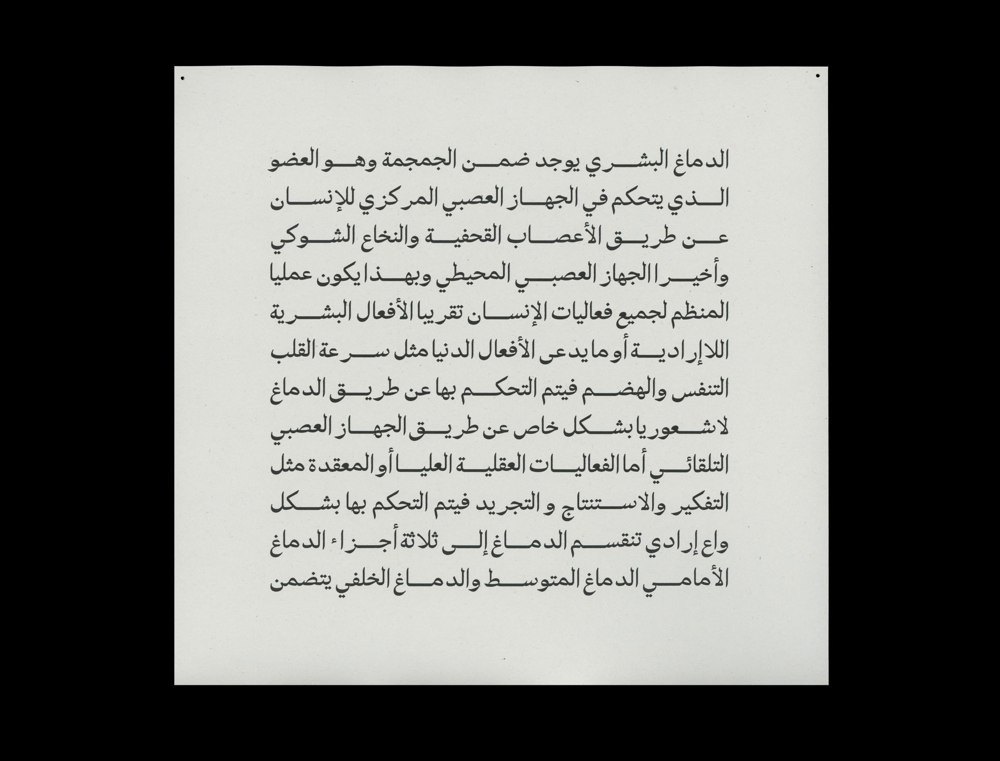

A single-style typeface for the Arabic script (2018)
Part of my first semester studies at TypeMedia. Designed as part of a workshop taught by Kristyan Sarkis. Unnamed and unreleased.

Example · A paragraph set in the typeface I designed.
Part of my first semester studies at TypeMedia. Designed as part of a workshop taught by Kristyan Sarkis. Unnamed and unreleased.

Example · A paragraph set in the typeface I designed.